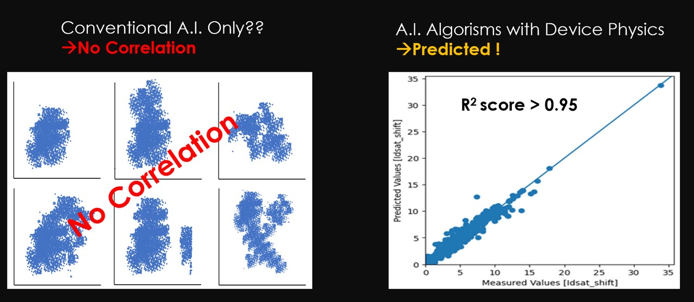

Semiconductor Reliability Test
Can predict Semiconductor Reliability through Device's genetic factors without Reliability test? Device reliability determined during manufacturing process just like all characteristics are shaped by genetic factors inside womb. So a reliability prediction system without reliability evalution through an Artificial Intelligence algorithm that learned Device Physics and Reliability Model.

In Industrty team, Over 180 pieces of expensive reliability measurement equipment ,Consumes ~1300 test wafers per year, 200 reliability engineers deployed, Average 3.2 months WLR/PLR reliability evaluation time, WLR (HCI/BTI/TDDB/ Vramp): Takes 4 weeks

In Contrast, For WLR (HCI/BTI/TDDB/ Vramp), Two Scientists Completed in 2 Hours through Semiconductor Genetic Analysis A.I. In Conventional 4 WLR tests take 30 days, but we make 2 hours to test up to Accuracy 96~98% .

There are no companies that process or are developing this technology. So we are going to apply for a patent in six countries. We already resigtered Korean Patent.